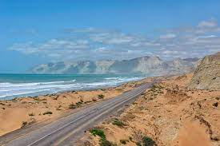
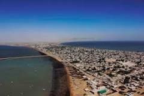
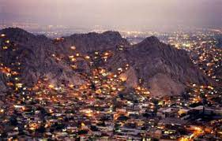
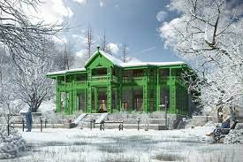

Balochistan is one of the four provinces of Pakistan. Located in the southwestern region of the country, Balochistan is the largest province of Pakistan by land area but is the least populated one.
Gwadar is a port city with located on the southwestern coast of Balochistan, Pakistan. The city is located on the shores of the Arabian Sea opposite Oman. Gwadar is the 100th largest city of Pakistan, according to the 2017 census. It was an overseas possession of Oman from 1783 to 1958.

Quetta is the tenth most populous city in Pakistan with a population of over 1.1 million. It is situated in south-west of the country close to the International border with Afghanistan. It is the capital of the province of Balochistan where it is the largest city.

Ziarat is a city in the Ziarat District situated in the Balochistan. It is 130 kilometres from the capital city of Eastern Balochistan Quetta. It was established as a district on 1st July 1986, before then it was part of Sibi district.
